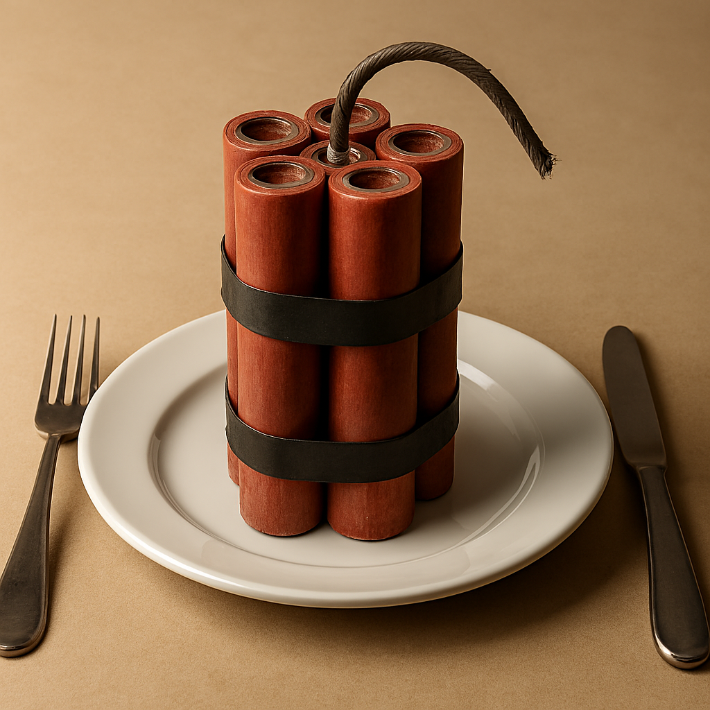

Home
How to make TNT

Description
Probably the most important explosive compound in use today is TNT (trinitrotoluene). This and other very similar types of high explosives are all used by the military, because of their fantastic power — about 2.25 million psi, and their great stability.
TNT also has the great advantage of being able to be melted at 82 degrees F., so that it can be poured into shells, mortars, or any other projectiles. Military TNT comes in containers which resemble dry cell batteries, and are usually ignited by an electrical charge, coupled with an electrical blasting cap, although there are other methods.
Ingredients
- Sulfuric acid (H₂SO₄) — 76%, 43%
- Nitric acid (HNO₃) — 23%, 57%
- Toluene — 10 g
- Water (H₂O)
Steps
- Take two beakers. In the first, prepare a solution of 76 percent sulfuric acid, 23 percent nitric acid, and I per-cent water. In the other beaker, prepare another solution of 57 percent nitric acid and 43 percent sulfuric acid (per-centages are on a weight ratio rather than volume).
- Ten grams of the first solution are poured Into an empty beaker and placed in an ice bath.
- Add ten grams of toluene, and stir for several min-utes.
- Remove this beaker from the ice bath and gently heat until it reaches 50 degrees C. The solution is stirred con-stantly while being heated.
- Fifty additional grams of the acid, from the first beaker, are added and the temperature is allowed to rise to 55 de-grees C. This temperature is held for the next tcn min-ute, and an oily liquid will begin to form on the top of the acid.
- After 10 or 12 minutes, the acid solution is returned to the ice bath, and cooled to 45 degrees C. When reach-ing this temperature, the oily liquid will sink and collect at the bottom of the beaker. At this point, the remaining acid solution should be drawn off, by using a syringe.
- Fifty more grams of the first acid solution are added to the oily liquid while the temperature is slowly being raised to 83 degrees C. After this temperature is reached, it is maintained for a' full half hour.
- At the end of this period, the solution is allowed to cool to 60 degrees C., and is held at this temperature for another full half hour. After this, the acid is again drawn off, leaving once more only the oily liquid at the bottom.
- Thirty grams of sulfuric acid are added, while the oily liquid is gently heated to 80 degrees C. All temperature in-creases must be accomplished slowly and gently.
- Once the desired temperature is reached, 30 grams of the second acid solution are added, and the temperature is raised from 80 degrees C. to 104 degrees C., and is held for three hours.
- After this three-hour period, the mixture is lowered to 100 degrees C. and is held there for a half hour.
- After this half hour. the oil is removed from the acid and washed with boiling water.
- After the washing with boiling water, while being stirred constantly, the TNT will begin to solidify.
- When the solidification has started, cold water is added to the beaker, so that the TNT will form into pellets. Once this is done, you have a good quality TNT.
Note: The temperatures used in the preparation of TNT are exact, and must be used as such. Do not estimate or use approximations. Buy a good centigrade thermometer.